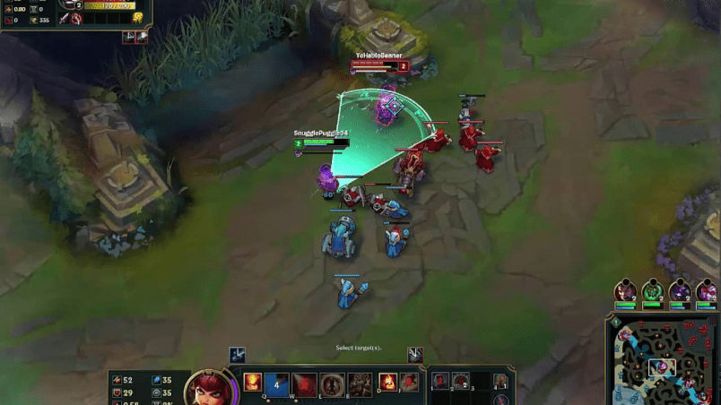
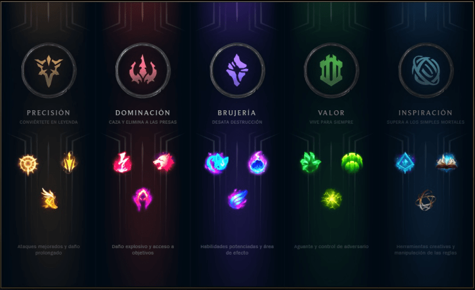
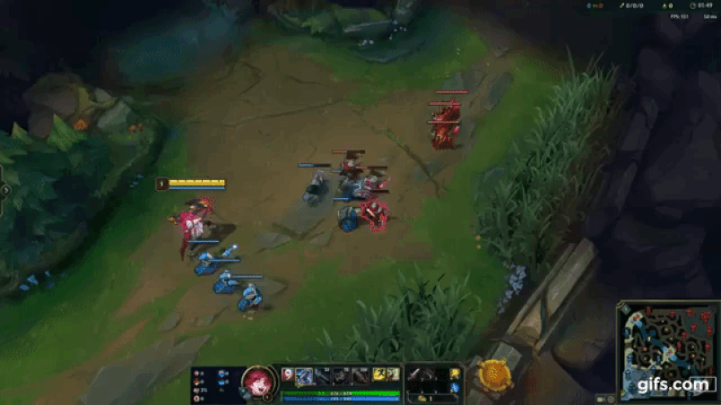

Conocimiento avanzado
Micro juego
¿Qué es el micro game?
Para poder empezar a hablar sobre el, primero habría que definirlo. El micro game es todo aquello que está relacionado con los campeones y los enfrentamientos entre ellos. Además de sus objetos, runas, combos y el farmeo.
Tradeos

Se le llama trade a cuando intercambias golpes con el campeon enemigo. Estos trades pueden ser
de
duración larga
o corta, dependiendo de que campeon seas y del campeon al que te enfrentes. Tradear de manera
efectiva es determinante a la hora
de ganar o de perder la linea. En el siguiente video voy a explicar en profundidad
los siguientes aspectos:
*aprender el daño de tu campeon
*aprender los combos de tu campeon
*saber el daño que puede hacer el enemigo
*saber que habilidad es primordial del enemigo
*minions a favor o en contra
*ventaja de nivel
*aprovechar el lasthit del campeon enemigo
*runas
*aprender el rango de ataque de las torres
*habilidades en cooldown
*hechizos de invocador en cooldown
*zhonyas, cronometro o GA
*siempre tener en cuenta al jungla rival
Objetos
Como habíamos mencionado en la parte de fundamentos principales, la compra de objetos es una de las principales formas que tiene un campeon para poder escalar en la partida (aumentar su poder). Muchísimas veces los jugadores suelen copiar una build que ven en internet de un jugador profesional o de elo alto y la llevan a todas sus partidas sin pensar en por que ese jugador se la hace, y eso es un error. En el siguiente video voy a explicar los items core y los items situacionales.
Runas
Las runas cumplen un rol fundamental a la hora de ganar un trade o incluso una partida y al igual que como sucede con los objetos, muchas veces los jugadores copian runas de una página, cuando en realidad las runas que tenemos que llevar son muy situacionales. En el siguiente video explicaré las runas:
Farmeo
El farmeo es la manera más facil que nos brinda el juego para poder escalar, y tener un buen farmeo puede llegar a ser incluso más importante que conseguir múltiples asesinatos sobre el enemigo. Lo "ideal" es tener aproximadamente 100 minions al minuto 10, aunque esto es algo irreal, sobre todo en partidas de elo bajo, ya que constantemente se fuerzan peleas. Si bien dije que el farm ideal es algo irreal, siempre hay que intentar ganar la mayor cantidad de oro posible. Por eso mi recomendación es que si sentis que te cuesta mucho hacer last hit sobre los minions, que te metas a la herramienta de practica a jugar solo e intentes llegar al farm que mencione anteriormente, utilizando solamente tus ataques básicos y sin comprar items (solo los iniciales). Si sentís que tu problema no es el last hit, pero aun así te cuesta llevar un buen farmeo en tus partidas, lo más probable es que no tengas conociemiento sobre el control de oleadas. Esto lo explicaré más adelante en la parte de macro game.
macro juego
¿Qué es el macro game?
El Macro game es basicamente la toma de decisiones, en cuanto a estrategia, que se tomen durante la partida; es decir, control de oleadas, presión de lineas, tempo, rotaciones, split push, objetivos, etc.
Tempo
El tempo es algo dificil de definir, pero es algo así como los factores que determinan que equipo tiene más prioridad y presión sobre algo en particular. Por ejemplo, si está por salir el dragón
y el equipo rojo ya volvió de base con sus items, y el equipo azul está con mitad de vida y con mucho oro sin utilizar, se dice que el equipo rojo tiene tempo sobre el dragón.
Los factores que determinan el tempo pueden ser: estadísticas de cada campeón, power spike, habilidades en cooldown, a que distancia se está del objetivo, la superioridad numérica, etc.
Control de oleadas
El control de oleadas es algo fundamental, ya que con este se puede sacar muchísima ventaja sobre el enemigo, y sin un buen control de oleadas, por más de que sepas last hitear bien, nunca vas a terminar con un buen farmeo. No solo eso, sino que también un buen control de oleadas puede significar que generemos tempo. Por eso en los siguientes videos voy a explicar todas las estrategias de control de oleadas, cuando se usan y sus ventajas, junto con sus desventajas.
Pusheo y prioridad de linea
Reset de oleadas
Rebote de oleadas
Freezeo
Estructuras
Toda acción en el lol tiene consecuencias, tanto positivas como negativas, y tirar una torre/inhibidor no es la excepción. En el siguiente video voy a explicar que es lo que sucede cuando tiramos una estructura:
Visión
La visión es un factor muy importante, no solo a la hora de evitar gankeos, sino que también sirve para trackear al jungla enemigo o para preparar un objetivo.
Fase de lineas:
Voy a explicar como wardear en fase de lineas como support, top y mid. Adc y jungla voy a explicarlos luego de manera más particular, ya que la jungla es un rol muy diferente y lo de adc lo voy a explicar de manera más profunda en la guía especializada para adcs.
Top
Mid
Support
Objetivos
En el siguiente video voy a explicar como setear un objetivo.
Mentalidad
Lo primero que hay que tener en cuenta a la hora de hablar de la mentalidad, es que el lol es un juego de estrategía y que pensar correctamente es tan importante como las mecánicas
que tengas con un campeón. Si realmente te interesa mejorar, tenés que utilizar el chat lo menos posible, comunicate por pings. Escribirle a tus compañeros de equipo la mayoría de veces es una pérdida
de tiempo, arruina el ambiente e incluso muchas veces puede hacer que pierdas una partida, porque ambos jugadores están mas concentrados en lo que dice el otro que en intentar ganar. Vos tenés que concentrarte
en jugar tu juego y hacer lo mejor posible, porque tu compañero no va a cambiar su forma de jugar, le digas lo que le digas, no pierdas tu tiempo escribiendole.
Muchas veces los jugadores de elos bajos suelen decir "yo no salgo de mi elo porque me tocan muchos trolls" y eso es una mentira. Todos pueden subir de división si verdaderamente se lo proponen; y proponerselo no es
decir "voy a llegar a challenger en una semana", porque es irreal, proponerselo es intentar mejorar tu gameplay, mirar tus replays (solo concentrandote en vos y no en tu team) para ver en que te equivocaste y no volver a cometer el error en el siguiente game, mirar las partidas de jugadores
profesionales o semi profesionales que juegan muchísimo mejor que vos, es decir, dedicarle tiempo al juego, pero dedicarle tiempo util, no jugar por jugar.
Si todavía crees que no salis de tu elo por los trolls, fijate que los jugadores de elo alto cuando smurfean tienen 100 porciento de win rate y están jugando con las mismas personas que vos.
Autocrítica
Para que un jugador pueda mejorar es fundamental que sea autocrítico y entienda que si bien no todas las partidas que se pierden son su culpa, muchas si lo son. Ser autocrítico no es decir "soy una mierda jugando al lol" y no hacer nada. Ser autocrítico requiere de tener capacidad de correción, es decir, buscar esos errores que cometiste durante la partida y aprender de ellos, pensar que hubiera pasado si yo hubiera hecho otra cosa, etc. Si bien dije que hay que ser autocrítico, no lo lleves al extremo, no te destruyas la mente porque una jugada te salió mal, porque te va a ser contra producente y vas a terminar frustrado, porque nadie es perfecto y errores vas a cometer siempre.
concentración
El League of Legends es un juego que demanda muchísima concentración, es decir que mientras jugamos no podemos estar mirando el celular, respondiendo whatsapp o hablando con la persona que tenemos al lado, sin que esto tenga una consecuencia negativa en el nivel de nuestro gameplay, por eso es que es recomendable evitar cualquier tipo de situación que nos pueda distraer, para estar 100 porciento focus en nuestro juego. A medida que juegues más va a haber cosas que antes te demandaban mucha concentración, pero con el paso del tiempo ya no lo hacen. Por ejemplo, si empezaste a jugar vayne hace poco, al principio farmear se te va a hacer dificil porque no estás acostumbrado al daño y la velocidad de ataque del campeon, pero cuando agarres más experiencia con vayne, vas a poder farmear bien de manera automatica, sin que tengas que perder concentración en ello. Por eso es que es recomendable aprender a usar un campeon antes de llevarlo a ranked; pero esto no pasa solo con los campeones, pasa con cada conocimiento nuevo de micro game que vayas adquiriendo.